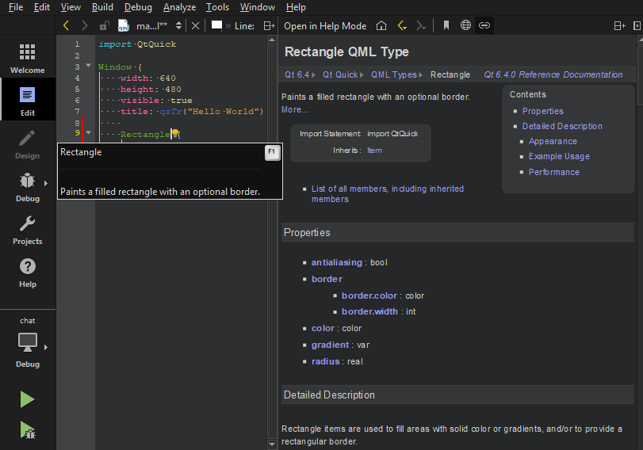

Detach the help window
By default, context-sensitive help is opened in a window next to the code editor when you press F1. If there is not enough vertical space, the help opens in the full-screen help mode.

To specify that the help always opens in full-screen mode or is detached to an external window, select Preferences > Help > General.

Set preferences for displaying context-sensitive help in the On context help field. To detach the help window, select Always Show in External Window.
To change this setting in a help view, select the toolbar button.
See also Get help.